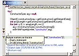

|
CodePro Analytix is the premier Java software testing tool for Eclipse developers who are concerned about improving software quality and reducing developments costs and schedules. The Java software audit features of the tool make it an indispensable assistant to the developer in reducing errors as the code is being developed and keeping coding practices in line with organizational guidelines. The ability to make corrections to the code immediately can dramatically reduce developments costs and improve the speed of finished product delivery. Join the ranks of top software industry leaders and the Fortune 500 who have standardized around CodePro Analytix as the most cost effective fully featured tool in the industry. | |||||||||||||||||||
| Key Features of | |||
|
Dynamic, extensible tools
that detect, report and repair deviations or non-compliance with
predefined coding standards, popular frameworks, security and
style conventions |
 |
Automated tools that measure and report on key quality indicators in a body of Java source code |
|
|
Time-saving facility that
uses sophisticated flow path analysis techniques to automates
the creation of comprehensive JUnit regression tests |
Powerful tools that measure what percentage of code is being executed using generated test cases or manual test scripts |
||
|
A rich JUnit test editing environment that enables rapid creation, organization, modification and execution of unit tests. |
Automated tools that analyze and visually depict the dependencies between projects, packages, and types |
||
|
Efficiently examines Java code to find duplicate or very similar segments of code containing copy/paste bugs or that can be refactored to improve application design and maintainability |
|||
Powered by Eclipse Technology
Copyright © 2001, 2010 Google, Inc. All rights reserved.
This product includes software developed by the Eclipse Project (http://www.eclipse.org/).
Google's CodePro offering is powered by Eclipse technology and includes Eclipse plug-ins that can be installed and used with the IBM Software Development Platform, an Eclipse-based offering.